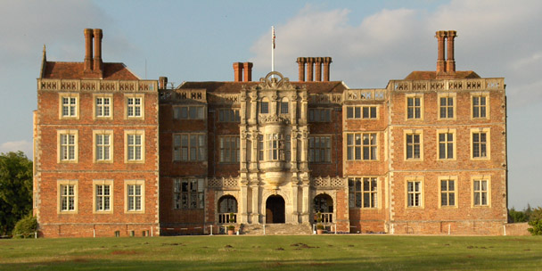

Bramshill House
From Wikipedia,the free encyclopedia
Bramshill House, in Bramshill, northeast Hampshire, England,
is one of the largest and most important Jacobean prodigy house mansions in England. It was built in the early 17th century by Baron Edward la Zouche of Harringworth but was partly destroyed by fire a few years later. The design shows the influence of the Italian Renaissance, which became popular in England during the late 16th century. The house was designated a Grade I listed building in 1952.
sss
The mansion's southern façade is notable for its decorative architecture, which includes at its centre a large oriel window above the principal entrance. Interior features include a great hall displaying 92 coats of arms on a Jacobean screen, an ornate drawing room, and a 126.5-foot-long (38.6 m) gallery. Numerous columns and friezes are found throughout the mansion, while several rooms have large tapestries depicting historical figures and events on their panelled walls. The house is set in 262 acres (106 ha) of grounds containing an 18-acre (7.3 ha) lake. The grounds, which received a Grade II* listing in 1984, are part of a Registered Historic Park that includes about 25 acres (10 ha) of early 17th-century formal gardens near the house. The wider medieval park was landscaped from the 17th to the 20th century and contains woodland.
Bramshill appears to have been a local sporting and social venue since the 16th century. The cricket ground at the house played host to a first-class match in 1823 when an early Hampshire team played an England XI, and it hosted three other matches in 1825–26. During the Second World War, the mansion was used as a Red Cross maternity home, before becoming the residence of the exiled King Michael and Queen Anne of Romania for a number of years. It became the location of the Police Staff College in 1960, and was later home to the European Police College. As a result, many campus buildings have been added to the estate. Owing to escalating maintenance costs the property was sold to the heritage property developers City & Country in August 2014. Among the 14 ghosts reputed to haunt the house is that of a bride who accidentally locked herself in a chest on her wedding night and was not found until 50 years later.